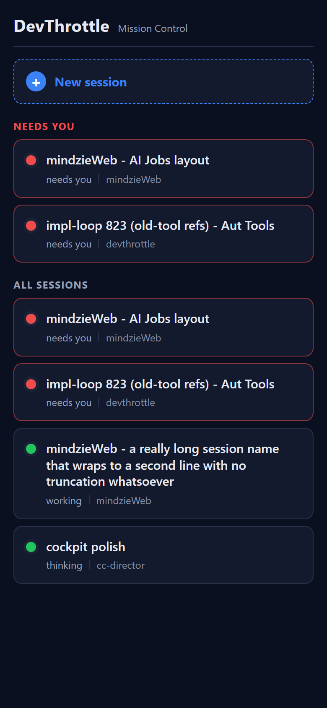
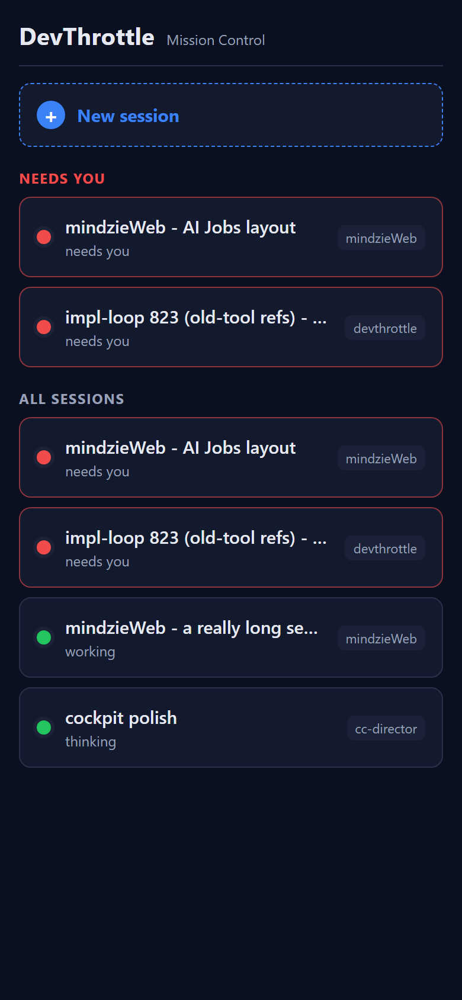
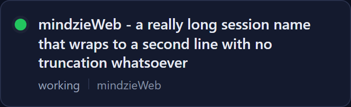
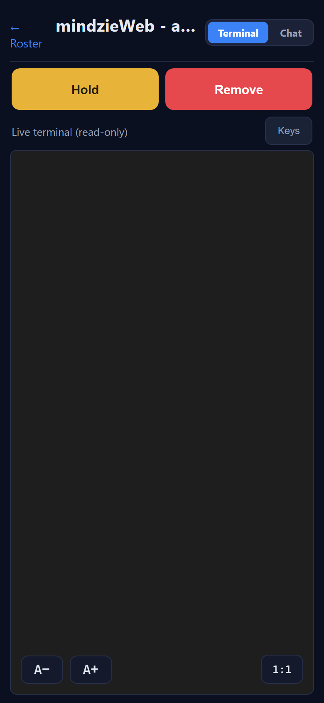

Developer Agent QA proof - CenCon Development Method. Surface: mobile PWA (/m), files mobile/src/pages/Home.tsx (SessionRow) and mobile/src/styles.css. Mobile-only layout change, owner-approved "Option A". No backend change.
white-space:nowrap; overflow:hidden; text-overflow:ellipsis clamp on .row-name; added overflow-wrap: anywhere and an explicit line-height. The name now spends the full card width and wraps to as many lines as it needs.SessionRow markup wraps the status text and the repo in a new .row-meta line under the name: <status> | <repo>. The repo is no longer a right-pinned pill - it is secondary text (smaller, dimmer via opacity) but fully readable. A thin CSS-drawn vertical divider (.row-divider, 1px, no glyph) separates the two..row-link changed from align-items:center to align-items:flex-start, with a small margin-top on .dot so it centers on the first line's text even when the name wraps to several lines.<a class="row-link"> link). No change to the data, ordering, or the GET /sessions typed client.The built mobile app (tsc --noEmit + vite build, clean) was served via vite preview and driven by a headless browser at a 390 x 844 phone viewport. A crafted roster (short needs-you, medium needs-you, a long-named working session, a short working session) was returned for GET /sessions; the per-machine Gateway token was injected into index.html exactly as the Gateway does at serve time, so the typed client attached its Authorization: Bearer header. The "before" column is the unchanged main version of the same two files, built and screenshot identically.
| # | Criterion | Expected | Actual (measured) | Result |
|---|---|---|---|---|
| 1 | Long name shows complete, wrapped, NO truncation/ellipsis, full card width. | Full text visible across multiple lines; no ellipsis clamp. | After: white-space: normal, overflow: visible, ~3 lines, full text rendered (scrollHeight==clientHeight, 59px). Before: nowrap + ellipsis + overflow:hidden, 1 line - truncated. See after-longcard vs before-roster. |
PASS |
| 2 | Repo rendered below the name, on the same line as the status, e.g. needs you | mindzieWeb. |
Repo under the name beside the status with a thin divider; not a right pill. | Each card shows the status text, a thin divider, then the repo on the line below the name. Before screenshot shows the old right-pinned repo pill for contrast. | PASS |
| 3 | Status / what-is-happening text remains visible on every card. | "needs you", "working", "thinking" visible on every card. | Roster shows "needs you" (red cards), "working" and "thinking" (green cards) - both a needs-you and a working card visible. | PASS |
| 4 | Short/medium names ~2 lines; long names ~3 lines; no card unnecessarily tall, none truncates. | Short card ~2 lines; long card ~3 lines. | Short "cockpit polish" card = 70px (2 lines: name + meta). Long card = 109px (3 lines: 2 name lines + meta). No truncation on either. | PASS |
| 5 | "Needs you" group above "All sessions"; dot color + needs-you attention styling preserved; tapping a card opens that session. | Grouping + colors intact; tap navigates to the session. | "NEEDS YOU" group renders above "ALL SESSIONS"; red dots + red attention border on needs-you cards, green dots on working. Tapping the long card navigated to /m/session/s-long-1 (session screen captured). |
PASS |
| 6 | Roster loads from GET /sessions via the typed client with the injected Bearer token (no data regression). |
2xx /sessions with the bearer header; roster populated. |
Captured request header on GET /sessions: Authorization: Bearer test-bearer-abc123; response 200; roster populated. See after-metrics.json. |
PASS |

working | mindzieWeb); groups, dot colors and attention border preserved. (AC2, AC3, AC4, AC5)


/m/session/s-long-1). Tap-to-open preserved. (AC5)No drift. This is a pure mobile front-end layout change to an existing surface. No architecture container is added or changed, no security_profile.yaml rule is touched, no backend / data / API change. The mobile asset build remains release-gated, so a routine dotnet build cc-director.sln (Debug) still does not invoke npm.
GET /sessions via the typed client with the injected Bearer token (AC6).